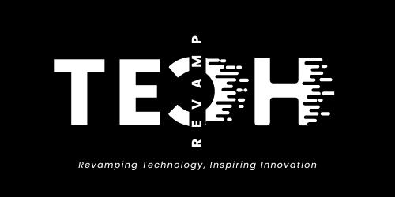

I’m Saail D. Tayshete, a Data Analyst based in Bangalore, India, with a passion for leveraging data to solve complex problems. My expertise lies in developing predictive models, designing insightful dashboards, and creating innovative solutions for real-world challenges.
I specialize in making data meaningful and actionable through tools like Python, Power BI, and machine learning frameworks. Whether it’s predicting financial trends or visualizing ecological impacts, I aim to turn raw data into strategies that drive success. My work has ranged from co-authoring publications on digital payments to building analytics platforms for SMEs, delivering efficiency and value.
I believe that data has the power to tell compelling stories, and my goal is to help organizations find those narratives, ensuring they are impactful, precise, and practical. If you're looking for someone to transform your data into a competitive edge, let’s connect!S
What i'm doing
Data Analysis
Professional-grade data analysis, delivering precise insights and impactful visualizations.
Model Predictions
High-quality model predictions, delivering accurate insights and practical solutions.
Web Deployment
Deployed machine learning models as web applications using frameworks like Flask and Streamlit, enabling user-friendly interfaces for predictions and insights.
Dynamic Dashboard Development
Interactive and adaptive dashboard creation for impactful data visualization.
Publications & Achievements
Technological Innovations in Digital Payments
Co-authored a survey paper exploring innovations in digital payments, addressing emerging
trends, key challenges, and future opportunities within the industry. The paper has been accepted for
publication in the Springer LNNS series, demonstrating a thorough understanding of technological
advancements and their impact on financial ecosystems.

Founder & Core Member Tech Revamp
Founded and led Tech Revamp, a university club organizing tech events for 650+ students, fostering
collaboration and engaging cross-functional teams.
Completed my high school education with a strong interest in Science and Maths.
Regularly participated in Olympiads, IPM, Homi Bhabha and similar exams. Also part of the school cricket,
kabbadi and table tennis teams.
Bharatiya Bhavan's College
2006 — 200712th Grade
Completed Junior college(Pre-University) with subjects like Physics, Maths, Chemistry and Electronics.
Bharatiya Bhavan's College
2002 — 2004BSc. Statistics
Earned a bachelor's degree in Statistics with minors in Mathematics and Physics.
Driven by a strong passion for working with data and uncovering valuable insights.
CHRIST (Deemed to be University)
2002 — 2004MSc. Data Science
Currently in the final trimester of my master’s program, with a deep passion for ML/DL modeling and predictive analytics.
Skilled in designing dynamic dashboards to extract meaningful insights. Successfully developed projects across various domains,
with notable expertise in finance. Also founded a University tech club called Tech Revamp which conducted varius events for 650+ students.
Experience
Data Analyst Intern - Iracle Analytics
June 2022 — August 2022
Built a predictive model that reduced premium payment defaults by 20% with 85% accuracy. Analyzed 500,000+ customer records, identifying 10+ key default factors and designed a Power BI dashboard,
reducing analysis time by 40%.
Geo AI intern - Deepspatial AI
January 2025 — June 2025
During my internship on "Geospatial AI-Driven Water Resources Management for Sustainable Development in Dhalai District, Tripura," I developed machine learning models to predict groundwater levels and assess quality, designed an early flood warning system for rivers, mapped rainwater harvesting sites using geospatial techniques, and analyzed watershed and land use to support sustainable water planning.